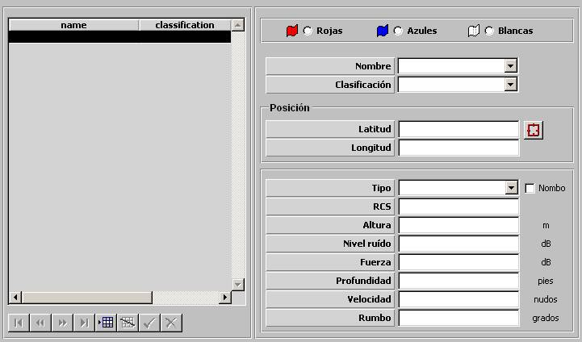

Falsos Ecos

Mediante esta tabla se especifican todas los Falsos Ecos incluidos en el Ejercicio. Durante la ejecución del ejercicio, a cada unidad se le presenta en la Pantalla Táctica Falsos Ecos correspondientes a su bando que tengan asociado un Nombo.
Se podrán incluir un máximo de diez Falsos Ecos por Ejercicio.
Rojo / Azul / Blanco: Bando al que pertenece la Zona Minada.
Posición: Este parámetro determina el punto donde se genera el falso eco:
Latitud: Latitud de la posición del falso eco.
Unidades: grados y minutos con dos decimales, con el formato: 999º99.99'N/S
Rango: 000º00.00'N – 089º59.99'N, 000º00.00'S – 089º59.99'S
Longitud: Latitud de la posición del falso eco.
Unidades: grados y minutos con dos decimales, con el formato: 999º99.99'N/S
Rango: 000º00.00'E – 179º59.99'E, 000º00.00'W – 179º59.99'W
Tipo: Puede tomar los siguientes valores:
Este parámetro determina si el Falso Eco puede ser detectado por Radar o por Sonar.
Nombo: Este parámetro determina si el Falso Eco tiene Nombo asociado, en cuyo caso será representado en la carta mediante símbolo.
RCS: Este parámetro es tenido en cuenta el modelo de radar para calcular la distancia a la que el Falso Eco es detectado. Sólo podrá ser introducido si el Tipo de Falso Eco es RADAR.
Unidades: m2
Rango: 1 – 999
Altura: Este parámetro determina la altura a la que se produce el Falso Eco. Sólo podrá ser introducido si el Tipo de Falso Eco es RADAR.
Unidades: metros
Rango: 0 – 99999
Nivel de Ruido: Este parámetro es tenido en cuenta por el modelo de Sonar Pasivo o Activo para determinar si detecta al Falso Eco. Sólo podrá ser introducido si el Tipo de Falso Eco es SONAR.
Unidades: dB
Rango: 0 – 999
Fuerza: Este parámetro es tenido en cuenta por el modelo de Sonar Activo para determinar si detecta al Falso Eco. Sólo podrá ser introducido si el Tipo de Falso Eco es SONAR.
Unidades: dB
Rango: 0 – 999
Profundidad: Este parámetro determina la profundidad a la que se produce el Falso Eco. Sólo podrá ser introducido si el Tipo de Falso Eco es SONAR.
Unidades: pies
Rango: 0 – 9999
Velocidad: Este parámetro determina la velocidad con la que se mueve el Falso Eco. Sólo podrá ser introducido si el Tipo de Falso Eco es SONAR.
Unidades: nudos
Rango: 0 – 999
Rumbo: Este parámetro determina el rumbo con el que se mueve el Falso Eco. Sólo podrá ser introducido si el Tipo de Falso Eco es SONAR.
Unidades: grados
Rango: 0 – 359